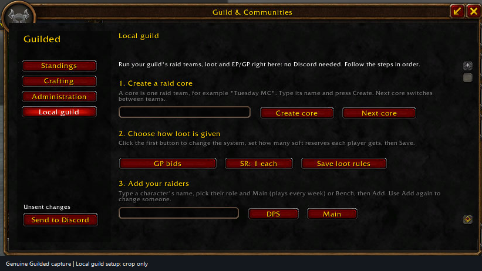

IN GAME
Your guild, where you play.
Standings, loot, recipes, dungeon runs. Shared with your guild in game.
FeaturesGuild standings, loot, crafters and dungeon runs, right inside WoW. Connect Discord later if you want.
CurseForge {{GUILDED_CURSEFORGE_VERSION}}GitHub {{GUILDED_VERSION}}

WHAT YOU GET
IN GAME
Standings, loot, recipes, dungeon runs. Shared with your guild in game.
FeaturesDISCORD · OPTIONAL
Signups, standings and polls in your Discord server.
Add the botCOMPANION · OPTIONAL
Send your saved data to Discord or the public leaderboards.
Open the companionIN GAME
Captured in game, 19 October 2026. Personal details hidden. More screenshots ↗
GET STARTED
On your minimap, in game. That’s all an addon-only guild needs.
Yes, for noncommercial use. Tips help pay for hosting but are never required. Buy me a coffee ↗
No. The addon shares everything with your guild in game. Discord and the companion are only for taking it online.
Add it to your server: Guilded Lite works right away, and KCaron’s approval unlocks addon sync, EP/GP and seasons. Hosted bot guide · Host your own